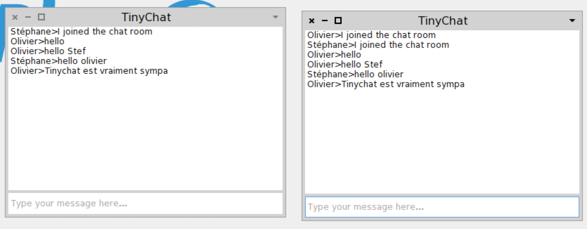
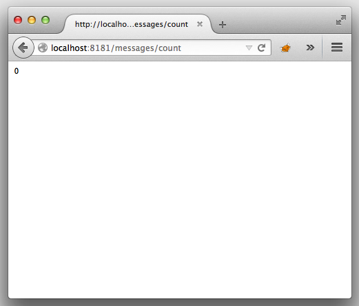
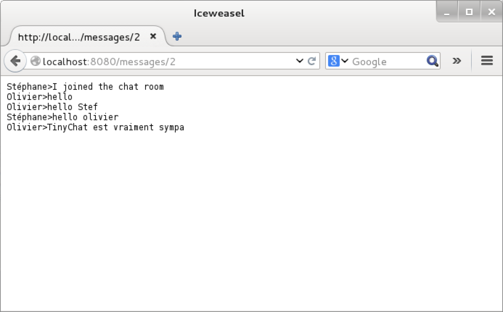

18 TinyChat: a fun and small chat client/server
Pharo allows the definition of a REST server in a couple of lines of code thanks to the Teapot package by zeroflag, which extends the superb HTTP client/server Zinc developed by BetaNine and was given to the community. The goal of this chapter is to make you develop, in five small classes, a client/server chat application with a graphical client. This little adventure will familiarize you with Pharo and show the ease with which Pharo lets you define a REST server. Developed in a couple of hours, TinyChat has been designed as a pedagogical application. At the end of the chapter, we propose a list of possible improvements.
TinyChat has been developed by O. Auverlot and S. Ducasse with a lot of fun.
18.1 Objectives and architecture
We are going to build a chat server and one graphical client as shown in Figure 18.1.

The communication between the client and the server will be based on HTTP and REST.
In addition to the classes TCServer and TinyChat (the client), we will define three other classes:
TCMessage which represents exchanged messages (as a future exercise you could extend TinyChat to use
more structured elements such as JSON or STON (the Pharo object format), TCMessageQueue which stores
messages, and TCConsole the graphical interface.
18.2 Loading Teapot
Teapot is hosted on github at https://github.com/zeroflag/Teapot Use the following script to load it.
Metacello new
baseline: 'Teapot';
repository: 'github://zeroflag/teapot:master/source';
load.Now we are ready to start.
18.3 Message representation
A message is a really simple object with a text and sender identifier.
Class TCMessage
We define the class TCMessage in the package TinyChat.
Object << #TCMessage
slots: { #sender . #text . #separator};
package: 'TinyChat'The instance variables are as follows:
sender: the identifier of the sender,text: the message text, andseparator: a character to separate the sender and the text.
Accessor creation
We create the following accessors:
TCMessage >> sender
^ sender
TCMessage >> sender: anObject
sender := anObject
TCMessage >> text
^ text
TCMessage >> text: anObject
text := anObject18.4 Instance initialisation
Each time an instance is created, its initialize method is invoked.
We redefine this method to set the separator value to the string >.
TCMessage >> initialize
super initialize.
separator := '>'.Now we create a class method named from:text: to instantiate a message (a class method is a method that will be executed on a class and not on an instance of this class):
TCMessage class >> from: aSender text: aText
^ self new sender: aSender; text: aText; yourselfThe message yourself returns the message receiver: this way we ensure that the returned object is the new instance and not the value returned by the text: message. This definition is equivalent to the following:
TCMessage class >> from: aSender text: aText
| instance |
instance := self new.
instance sender: aSender; text: aText.
^ instance18.5 Converting a message object into a string
We add the method printOn: to transform a message object into a character string.
The model we use is sender-separator-text-crlf. Example: 'john>hello !!!'.
The method printOn: is automatically invoked by the method printString. This method is invoked by tools such
as the debugger or object inspector.
TCMessage >> printOn: aStream
aStream
<< self sender; << separator;
<< self text; << String crlf18.6 Building a message from a string
We also define two methods to create a message object from a plain string of the form: 'olivier>tinychat is cool'.
First, we create the method fromString: filling up the instance variables of an instance. It will be invoked like this: TCMessage new fromString: 'olivier>tinychat is cool', then the class method fromString: which will first create the instance.
TCMessage >> fromString: aString
"Compose a message from a string of this form 'sender>message'."
| items |
items := aString substrings: separator.
self sender: items first.
self text: items second.You can test the instance method with the following expression TCMessage new fromString: 'olivier>tinychat is cool'.
TCMessage class >> fromString: aString
^ self new
fromString: aString;
yourselfWhen you execute the following expression TCMessage fromString: 'olivier>tinychat is cool' you should get a message.
We are now ready to work on the server.
18.7 Starting with the server
For the server, we are going to define a class to manage a message queue. This is not really mandatory but it allows us to separate responsibilities.
Storing messages
Create the class TCMessageQueue in the package TinyChat-Server.
Object << #TCMessageQueue
slots: { #messages};
package: 'TinyChat-server'The messages instance variable is an ordered collection whose elements are instances TCMessage.
An OrderedCollection is a collection which dynamically grows when elements are added to it.
We add an instance initialize method so that each new instance gets a proper messages collection.
TCMessageQueue >> initialize
super initialize.
messages := OrderedCollection new.Basic operations on message list
We should be able to add, clear the list, and count the number of messages, so we define three methods: add:, reset, and size.
TCMessageQueue >> add: aMessage
messages add: aMessage TCMessageQueue >> reset
messages removeAllTCMessageQueue >> size
^ messages sizeList of messages from a position
When a client asks the server about the list of the last exchanged messages, it mentions the index of the last message it knows. The server then answers the list of messages received since this index.
TCMessageQueue >> listFrom: aIndex
^ (aIndex > 0 and: [ aIndex <= messages size])
ifTrue: [ messages copyFrom: aIndex to: messages size ]
ifFalse: [ #() ]Message formatting
The server should be able to transfer a list of messages to its client given an index.
We add the possibility to format a list of messages (given an index).
We define the method formattedMessagesFrom: using the formatting of a single message as follows:
TCMessageQueue >> formattedMessagesFrom: aMessageNumber
^ String streamContents: [ :formattedMessagesStream |
(self listFrom: aMessageNumber)
do: [ :m | formattedMessagesStream << m printString ] ]Note how the streamContents: lets us manipulate a stream of characters.
18.8 The Chat server
The core of the server is based on the Teapot REST framework. It supports the sending and receiving of messages. In addition, this server keeps a list of messages that it communicates to clients.
TCServer class creation
We create the class TCServer in the TinyChat-Server package.
Object << #TCServer
slots: { #teapotServer . #messagesQueue};
package: 'TinyChat-Server'The instance variable messagesQueue represents the list of received and sent messages.
We initialize it like this:
TCServer >> initialize
super initialize.
messagesQueue := TCMessageQueue new.The instance variable teapotServer refers to an instance of the Teapot server that we will create using the method initializePort:
TCServer >> initializePort: anInteger
teapotServer := Teapot configure: {
#defaultOutput -> #text.
#port -> anInteger.
#debugMode -> true
}.
teapotServer start.The HTTP routes are defined in the method registerRoutes. Three operations are defined:
- GET
messages/count: returns to the client the number of messages received by the server, - GET
messages/<id:IsInteger>: the server returns messages from an index, and - POST
/message/add: the client sends a new message to the server.
TCServer >> registerRoutes
teapotServer
GET: '/messages/count' -> (Send message: #messageCount to: self);
GET: '/messages/<id:IsInteger>' -> (Send message: #messagesFrom: to: self);
POST: '/messages/add' -> (Send message: #addMessage: to: self)Here we express that the path message/count will execute the message messageCount on the server itself.
The pattern <id:IsInteger> indicates that the argument should be expressed as number and that it will be converted
into an integer.
Error handling is managed in the method registerErrorHandlers. Here we see how we can get an instance of the class TeaResponse.
TCServer >> registerErrorHandlers
teapotServer
exception: KeyNotFound -> (TeaResponse notFound body: 'No such message')Starting the server is done in the class method TCServer class>>startOn: that gets the TCP port as argument.
TCServer class >> startOn: aPortNumber
^self new
initializePort: aPortNumber;
registerRoutes;
registerErrorHandlers;
yourselfWe should also offer the possibility to stop the server. The method stop stops the teapot server and empties the message list.
TCServer >> stop
teapotServer stop.
messagesQueue reset.Since there is a chance that you may execute the expression TCServer startOn: multiple times, we define the class method stopAll which stops all the servers by iterating over all the instances of the class TCServer.
The method TCServer class>>stopAll stops each server.
TCServer class >> stopAll
self allInstancesDo: #stop18.9 Server logic
Now we should define the logic of the server.
We define a method addMessage: that extracts the message from the request. It adds a newly created message (instance of class TCMessage) to the list of messages.
TCServer >> addMessage: aRequest
messagesQueue add: (TCMessage from: (aRequest at: #sender) text: (aRequest at: #text)).The method messageCount gives the number of received messages.
TCServer >> messageCount
^ messagesQueue sizeThe method messageFrom: gives the list of messages received by the server since a given index (specified by the client).
The messages returned to the client are a string of characters. This is definitively a point to improve - using string is a poor choice here.
TCServer >> messagesFrom: request
^ messagesQueue formattedMessagesFrom: (request at: #id) Now the server is finished and we can test it. First, let us begin by starting it:
TCServer startOn: 8181Now we can verify that it is running either with a web browser (Figure 18.2), or with a Zinc expression as follows:
ZnClient new url: 'http://localhost:8181/messages/count' ; getShell lovers can also use the curl command:
curl http://localhost:8181/messages/count
We can also add a message the following way:
ZnClient new
url: 'http://localhost:8181/messages/add';
formAt: 'sender' put: 'olivier';
formAt: 'text' put: 'Super cool ce tinychat' ; post18.10 The client
Now we can concentrate on the client part of TinyChat. We decomposed the client into two classes:
TinyChatis the class that defines the connection logic (connection, send, and message reception),TCConsolePresenteris a class defining the user interface.
The logic of the client is:
- During client startup, it asks the server for the index of the last received message,
- Every two seconds, it requests from the server the messages exchanged since its last connection. To do so, it passes to the server the index of the last message it got.
TinyChat class
We now define the class TinyChat in the package TinyChat-client.
Object << #TinyChat
slots: {#url . #login . #exit . #messages . #console . #lastMessageIndex};
package: 'TinyChat-client'This class defines the following instance variables:
- url that contains the server url,
- login a string identifying the client,
- messages is an ordered collection containing the messages read by the client,
- lastMessageIndex is the index of the last message read by the client,
- exit controls the connection. While exit is false, the client regularly connects to the server to get the unread messages
- console refers to the graphical console that allows the user to enter and read messages.
We initialize these variables in the following instance initialize method.
TinyChat >> initialize
super initialize.
exit := false.
lastMessageIndex := 0.
messages := OrderedCollection new.HTTP commands
Now, we define methods to communicate with the server. They are based on the HTTP protocol.
Two methods will format the request. One, which does not take an argument, builds the requests
/messages/add and /messages/count. The other has an argument used to get the message given a position.
TinyChat >> command: aPath
^'{1}{2}' format: { url . aPath }
TinyChat >> command: aPath argument: anArgument
^'{1}{2}/{3}' format: { url . aPath . anArgument asString }Now that we have these low-level operations we can define the three HTTP commands of the client as follows:
TinyChat >> cmdLastMessageID
^ self command: '/messages/count'TinyChat >> cmdNewMessage
^self command: '/messages/add'TinyChat >> cmdMessagesFromLastIndexToEnd
"Returns the server messages from my current last index to the last one on the server."
^ self command: '/messages' argument: lastMessageIndexNow we can create commands but we need to emit them. This is what we look at now.
18.11 Client operations
We need to send the commands to the server and to get back information from the server.
We define two methods. The method readLastMessageID returns the index of the last message received from the server.
TinyChat >> readLastMessageID
| id |
id := (ZnClient new url: self cmdLastMessageID; get) asInteger.
id = 0 ifTrue: [ id := 1 ].
^ idThe method readMissingMessages adds the last messages received from the server to the list of messages known by the client.
This method returns the number of received messages.
TinyChat >> readMissingMessages
"Gets the new messages that have been posted since the last request."
| response receivedMessages |
response := (ZnClient new url: self cmdMessagesFromLastIndexToEnd; get).
^ response
ifNil: [ 0 ]
ifNotNil: [
receivedMessages := response substrings: String crlf.
receivedMessages do: [ :msg | messages add: (TCMessage fromString: msg) ].
receivedMessages size.
].We are now ready to define the refresh behavior of the client via the method refreshMessages.
It uses a light process to read the messages received from the server at a regular interval.
The delay is set to 2 seconds. (The message fork sent to a block (a lexical closure in Pharo) executes this block in a light process). The logic of this method is to loop as long as the client does not specify to stop via the state of the exit variable.
The expression (Delay forSeconds: 2) wait suspends the execution of the process in which it is executed for a given number of seconds.
TinyChat >> refreshMessages
[
[ exit ] whileFalse: [
(Delay forSeconds: 2) wait.
lastMessageIndex := lastMessageIndex + (self readMissingMessages).
console print: messages.
]
] forkThe method sendNewMessage: posts the message written by the client to the server.
TinyChat >> sendNewMessage: aMessage
^ ZnClient new
url: self cmdNewMessage;
formAt: 'sender' put: (aMessage sender);
formAt: 'text' put: (aMessage text);
postThis method is used by the method send: that gets the text written by the user.
The string is converted into an instance of TCMessage. The message is sent and the client updates the index of the last
message it knows, then it prints the message in the graphical interface.
TinyChat >> send: aString
"When we send a message, we push it to the server and in addition we update the local list of posted messages."
| msg |
msg := TCMessage from: login text: aString.
self sendNewMessage: msg.
lastMessageIndex := lastMessageIndex + (self readMissingMessages).
console print: messages.We should also handle the server disconnection. We define the method
disconnect that sends a message to the client indicating that it is disconnecting and also stops
the connecting loop of the server by putting exit to true.
TinyChat >> disconnect
self sendNewMessage: (TCMessage from: login text: 'I exited from the chat room.').
exit := true18.12 Client connection parameters
Since the client should contact the server on specific ports, we define a method to
initialize the connection parameters. We define the class method TinyChat class>>connect:port:login: so that we
can connect the following way to the server: TinyChat connect: 'localhost' port: 8080 login: 'username'
TinyChat class >> connect: aHost port: aPort login: aLogin
^ self new
host: aHost port: aPort login: aLogin;
startTinyChat class>>connect:port:login: uses the method host:port:login:. This method just updates the url instance variable and sets the login as specified.
TinyChat >> host: aHost port: aPort login: aLogin
url := 'http://' , aHost , ':' , aPort asString.
login := aLoginFinally, we define a method start: which creates a graphical console (that we will define later), tells the server
that there is a new client, and gets the last message received by the server.
Note that a good evolution would be to decouple the model from its user interface by using notifications.
TinyChat >> start
console := TCConsolePresenter attach: self.
self sendNewMessage: (TCMessage from: login text: 'I joined the chat room').
lastMessageIndex := self readLastMessageID.
self refreshMessages.18.13 User interface
The user interface is composed of a window with a list and an input field as shown in Figure 18.1.
SpPresenter << #TCConsolePresenter
slots: {#chat . #list . #input};
package: 'TinyChat-client'Note that the class TCConsolePresenter inherits from SpPresenter. This class is the root of the user interface logic classes.
TCConsolePresenter defines the logic of the client interface (i.e. what happens when we enter text in the input field...).
Based on the information given in this class, the Spec user interface builder automatically builds the visual representation.
The chat instance variable is a reference to an instance of the client model TinyChat and requires a setter method (chat:). The list and input instance variables both require an accessor.
This is required by the User Interface builder.
TCConsolePresenter >> input
^ inputTCConsolePresenter >> list
^ listTCConsolePresenter >> chat: anObject
chat := anObjectWe set the title of the window by defining the method title.
TCConsolePresenter >> title
^ 'TinyChat'Now we should specify the layout of the graphical elements that compose the client.
To do so we define the class method TCConsolePresenter>>defaultLayout. Here we need a column with a list and an input field placed right below.
TCConsolePresenter >> defaultLayout
^ SpBoxLayout newTopToBottom
add: list;
add: input ;
yourselfWe should now initialize the widgets that we will use.
The method initializeWidgets specifies the nature and behavior of the graphical components.
The message acceptBlock: defines the action to be executed then the text is entered in the input field.
Here we send it to the chat model and empty it.
TCConsolePresenter >> initializeWidgets
list := self newList.
input := self newTextInput.
input
placeholder: 'Type your message here...';
whenSubmitDo: [ :string |
chat send: string.
input text: '' ].
self focusOrder add: input.The method print displays the messages received by the client and assigns them to the list contents.
TCConsole >> print: aCollectionOfMessages
list items: (aCollectionOfMessages collect: [ :m | m printString ])Note that this method is invoked by the method refreshMessages and that changing all the list elements when we add just one element is rather ugly but ok for now.
Finally we need to define the class method TCConsole class>>attach: that gets the client model as argument.
This method opens the graphical elements and puts in place a mechanism that will close the connection as soon as the client closes the window.
TCConsolePresenter class >> attach: aTinyChat
| window |
window := self new chat: aTinyChat.
window open whenClosedDo: [ aTinyChat disconnect ].
^ window18.14 Now chatting

Now you can chat with your server. The example resets the server and opens two clients.
| tco tcs |
TCServer stopAll.
TCServer startOn: 8080.
tco := TinyChat connect: 'localhost' port: 8080 login: 'olivier'.
tco send: 'hello'.
tcs := TinyChat connect: 'localhost' port: 8080 login: 'Stef'.
tcs send: 'salut olivier'18.15 Conclusion and ideas for future extensions
We show that creating a REST server is simple with Teapot. TinyChat provides a fun context to explore programming in Pharo and we hope that you like it. We designed TinyChat so that it favors extensions and exploration. Here is a list of possible extensions.
- Using JSON or STON to exchange information and not plain strings.
- Making sure that the clients can handle a failure of the server.
- Adding only the necessary messages to the list in the graphical client.
- Managing concurrent access in the server message collection (if the server should handle concurrent requests the current implementation is not correct).
- Managing connection errors.
- Getting the list of connected users.
- Editing the delay to check for new messages.
There are probably more extensions and we hope that you will have fun exploring some.